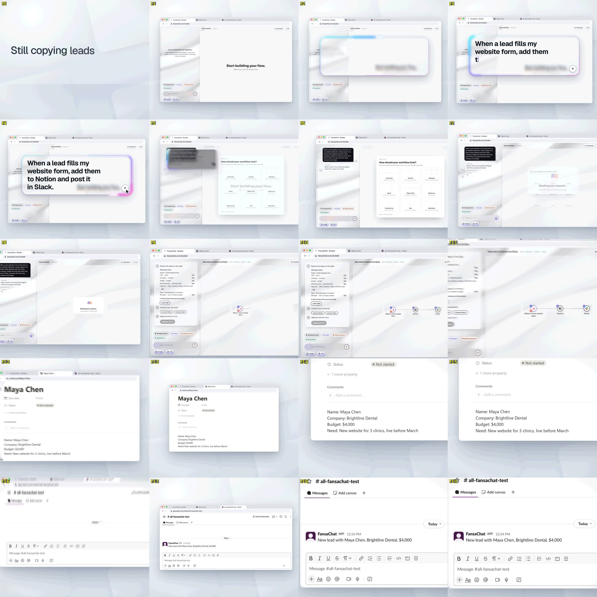
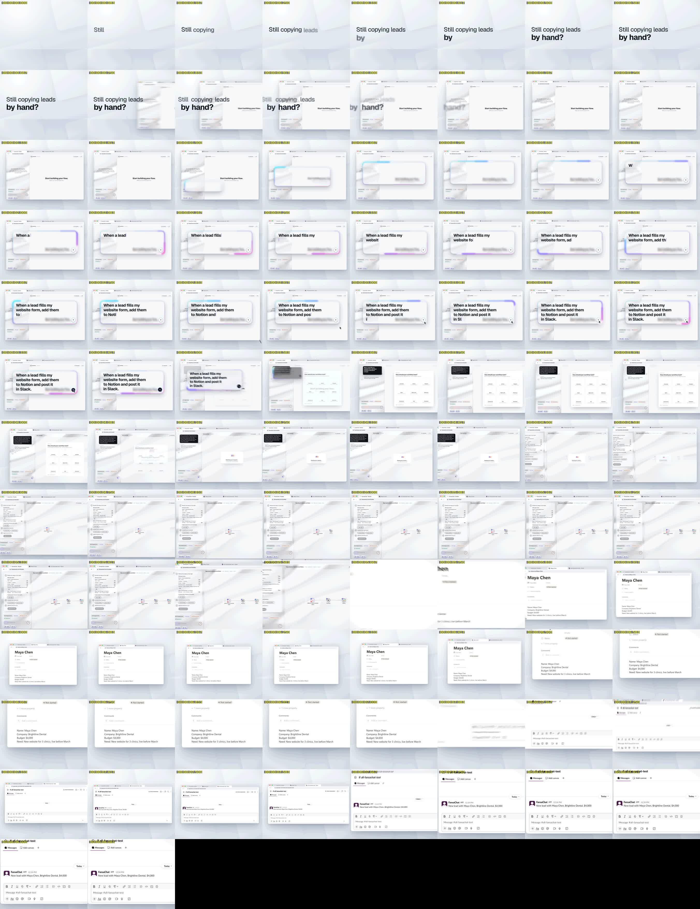

Threshold: -24.3 LUFS
Loudness range:
LRA: 2.2 LU
Threshold: -34.9 LUFS
LRA low: -16.2 LUFS
LRA high: -14.0 LUFS
True peak:
Peak: -1.4 dBFS
[out#0/null @ 0x558d66e99dc0] video:100KiB audio:1540KiB subtitle:0KiB other streams:0KiB global headers:0KiB muxing overhead: unknown
frame= 246 fps=0.0 q=-0.0 Lsize=N/A time=00:00:08.20 bitrate=N/A speed=18.2x elapsed=0:00:00.45